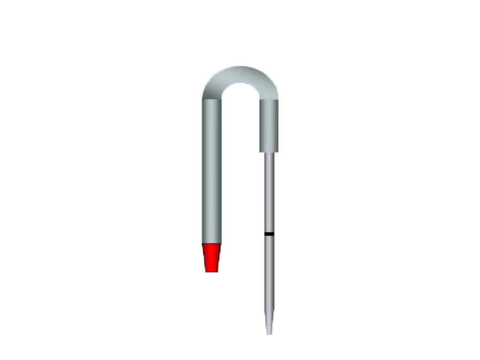

!! HAEMOGLOBIN ESTIMATION BY SAHLIS METHOD !!
Select The Lancet

Prick The Finger
Select haemoglobinometer pipette
Suck the blood
Next main step
Lancet
Haemoglobinometer Pipette
FIRST STEP-PRICKING AND TAKING BLOOD SAMPLE